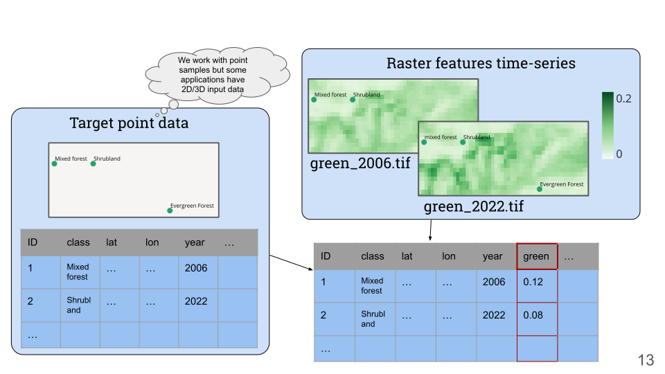

Quickstart#
See Installation for installation instructions.
Creating a catalog#
Every scikit-map project starts with a catalog. This is a Pandas Dataframe or a csv file.
layer_name |
path |
type |
start_year |
end_year |
|
|---|---|---|---|---|---|
layer_{year} |
file_{year}.tif |
temporal |
2000 |
2022 |
|
static |
static.tif |
common |
Create a catalog from it like:
>>> from pathlib import Path
>>> from skmap.catalog import DataCatalog
>>> catalog = DataCatalog.create_catalog(
... catalog_def="docs/quickstart/example.csv",
... years=list(range(2000,2022)),
... base_path=str(Path(".").absolute())
... )
>>> catalog.data
{'2000': {'layer_YYYY': {'path': ' file_2000.tif', 'idx': 0}}, ... 'common': {'static': {'path': 'static.tif', 'idx': 22}}}
Space-Time overlay#

TODO